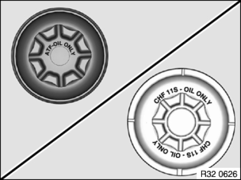

Power Steering Bleeding: Service and Repair
32 13 006 Bleeding power steering unit

WARNING:
Danger of poisoning if oil is ingested/absorbed through the skin.
Risk of injury if oil comes into contact with eyes and skin.

IMPORTANT:
Adhere to the utmost cleanliness. Do not allow any dirt to enter the hydraulic system.
Using contaminated equipment to add fluid may introduce dirt particles into the fluid reservoir and significantly reduce the service life of the power steering system. Do not use any filler funnels or similar.
The fill level may only be checked or adjusted when the engine is stopped.
The fluid temperature should be approx. 20°C here.
Ensure that the cap is fully screwed in prior to the fill level check.

NOTE: To avoid mix-ups when filling with hydraulic fluid, mark the fluid reservoirs or their caps with identification marks.
ATF Automatic transmission fluid
CHF Pentosin CHF11S

1. Thoroughly clean fluid reservoir and its immediate surroundings
2. Check and correct fill level
NOTE: The fill level can come to rest above the "MAX" mark when the engine is at normal operating temperature. This is dictated by the design in that the marking on the dipstick is referred to a fluid temperature of 20°C. With the engine at normal operating temperature (approx. 50-60°C fluid temperature) adjust a fill height 10 mm above the "MAX" mark. Do not under any circumstances draw off the fluid to the "MAX" mark when the engine is at normal operating temperature.
Hydraulic fluid: BMW Service Operating Fluids
3. Start engine
4. Turn steering wheel left and right twice in each case up to full lock; if necessary, top up hydraulic fluid (e.g. if hydraulic system is completely drained)
5. Move steering wheel to straight-ahead position and turn off engine
6. Check and correct fill level with engine stopped
7. Check hydraulic system for leaks